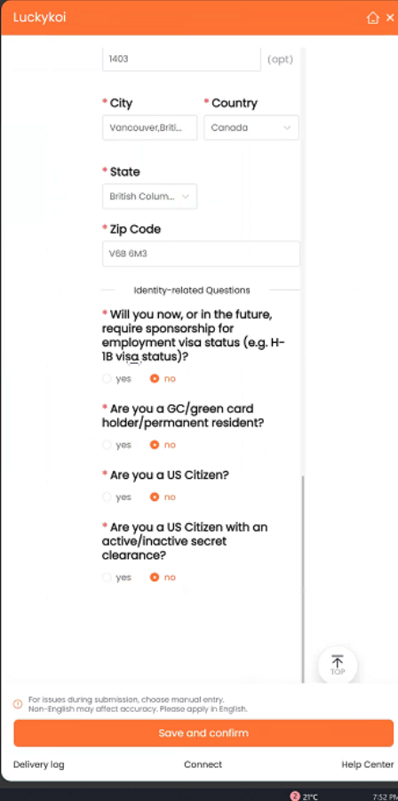

Repositioning an AI Job-Search Product: Features → Trust
How 5 moderated think-aloud sessions uncovered the hidden trust barriers behind an AI product's user churn — and lifted retention 12 percentage points.

Overview
Background
Luckykoi is an AI browser plugin by OOCC, a nonprofit serving job seekers. It automates job applications through LinkedIn — the pitch: "Apply to multiple jobs in 1 click. 10x your efficiency."
The business was in crisis: steady acquisition spend and a compelling value prop, yet 70% of new users were gone within a week. There was almost no user feedback to guide iteration, and the team was building features on assumptions. As the team's first UX research consultant, my task was to uncover the root causes of abandonment — in two weeks, with zero recruitment budget.
Framing
The team came with a business question: "How do we improve new-user retention and get product feedback to guide our feature roadmap?" I translated it into a testable research question: "What specific usability barriers cause users to abandon at each stage — and which should we fix first?"
Design
The team initially proposed competitive analysis (borrow feature ideas from rivals) or a survey (ask potential users about job-search needs). I argued for moderated think-aloud usability testing instead:
- Body-check first.Fix our own product experience before chasing new users or competitors.
- Cost & time efficient.Surveys need large samples; competitive analysis is slow. With zero budget, small-sample depth wins.
- Startup agility.Fast iteration beats comprehensive-but-slow research. 5 users, 2 weeks, clear insights.
Sampling — rigor on a zero budget
No budget meant no paid panels. My fix: cold outreach plus targeted social-media posts — but "flexible" never meant "random." I tightly controlled screening so 5 participants formed a genuinely diverse sample:
| Age | Experience | Region | Industry / Role | |
|---|---|---|---|---|
| P1 | 35 | 10+ yrs | US | Finance / Risk Manager |
| P2 | 31 | 7 yrs | Canada | Tech / Game Designer |
| P3 | 33 | 9 yrs | Canada | Journalism |
| P4 | 25 | 2–3 yrs | US | Tech / PM |
| P5 | 30 | 5 yrs | US | Energy / Project Manager |
That diversity caught two problem types even at n=5: region-specific issues (salary input not distinguishing USD/CAD) and career-stage tension ("this tool feels like it's only for new grads"). Lean recruiting doesn't mean loose sampling.
Fieldwork
Four core tasks tested end to end: visit website → download plugin → register account → apply for a job. I designed, recruited, and moderated all 5 sessions solo — 30 minutes each — transcribing with Otter.ai while logging body language, hesitation, and frustration myself, and manually reviewing every transcript.
Findings
Users landed on the homepage, browsed for about 5 seconds, then asked: "What is this product?" Multiple buttons all looked like download entries — four look-alike CTAs and nobody could tell which was real. Zero trust from second one.
Recommendation: a 5-second-clear tagline stating exactly what it does, a visible progress flow (upload resume → AI matches → review & apply), and partner logos plus a transparent About Us.
The plugin connected to LinkedIn and auto-filled sensitive identity data — visa status, address, phone — without explicit consent. Users felt invaded, and the same worry surfaced again and again.

Recommendation: consent-first dialog before any data transfer, a mandatory Terms & Privacy step at registration, and plain-language notes on what's collected, why, and how it's protected.
Users loved the automation ("I can walk away and grab a coffee") but panicked when they couldn't see or edit what the AI was doing. The fear ran deeper than wrong applications — it was about professional exposure.
Users want speed and the final say. They want to stay the gatekeeper.
Recommendation: manual / semi-auto / auto modes so users pick their comfort level, a "resume preview & confirm" step before submission, clear start/pause controls, and a progress timeline (resume → apply → submitted).
AI in the workflow
I used AI tooling throughout — but stayed the gatekeeper at every step, reviewing every transcript and rejecting summaries that missed nuance:
| Research step | AI accelerated | I decided & validated |
|---|---|---|
| Desk research | ChatGPT mapped the domain | Chose focus areas & probes |
| Guide design | ChatGPT drafted the framework | Customized for business context |
| Sessions | Otter.ai live transcription | Moderated live; logged nonverbal cues |
| Synthesis | Otter + Dovetail summaries | Reviewed every transcript |
| Coding | ChatGPT pre-classified phrases | Re-labeled by hand; drove prioritization |
| Recommendations | ChatGPT starting points | Pressure-tested, sequenced, owned the calls |
Result: 15–30% of design time saved, ~30% of analysis time saved, same-day one-page session briefs — with rigor intact.
Impact
The hardest evidence: the team shipped my recommendations — and described them back using my exact framing.
| My recommendation | What shipped |
|---|---|
| 5-second-clear tagline | "AI-powered tool helps you search faster" — live |
| Show upload → match → review flow | New progress timeline added |
| Consent dialog for LinkedIn access | Privacy consent step now mandatory |
| "Privacy-first" into core roadmap | Now part of product positioning |
| Manual + auto modes; preview-confirm | Resume preview-confirm + clear controls live |
| Regional form localization | Regional fields localized (USD/CAD) |
Reflection
What should still be human-led? I expected the answer to be strategic, decision-heavy work — and that's still true. What I learned is that foundational, insight-related work should stay human-led too: to correct AI and give it precise instructions, a researcher must know the details more deeply than the AI does.
What I'd do differently: invite stakeholders to observe 2–3 sessions live — seeing beats reading a report — and pilot the discussion guide first (I caught awkward wording only after Session 2).
Why this case stands out: solo end-to-end ownership in 2 weeks; rigor on a zero budget; AI-augmented but human-led; and findings that balanced problems with strengths worth keeping — the koi visuals users loved, auto-fill beating Workday, the genuine "wow."